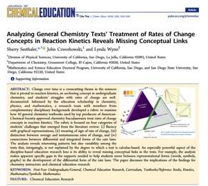
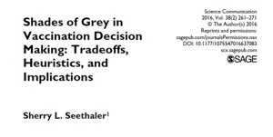
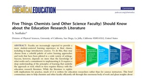
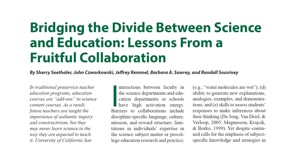
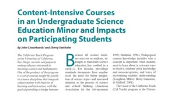

As we interact with the world, our minds are not empty vessels to be filled with knowledge, but rather a puzzling chimera of sponge and filter. Consciously and unconsciously we absorb some information, remain impervious to other information, and construct our own understanding on the fly. Concepts are joined together like building blocks, often to be disassembled and reconstructed. Different contexts may result in different building blocks coming together, sometimes in ways that advance our understanding and sometimes in ways that hinder it.
When it comes to reasoning about complex issues, we can be our own worst enemies. Our brains are wired to optimize efficiency, but efficiency and accuracy can be at odds. Shortcuts in reasoning do work in certain contexts, which is why we acquire them. The challenge is learning to be judicious with respect to the contexts in which we use them. Doing so requires us to figuratively step outside our own cognition to study and critique it. In other words, cognition about cognition, or metacognition, is a guide to good reasoning. The ability to critique also depends upon a well-developed personal epistemology, or our views about what constitutes good knowledge and knowing. Epistemology provides us with a standard, or rubric, for appraising our current state of knowledge.
Research cutting across a range of fields, including cognitive science, education, neuroscience, philosophy, psychology and sociology, continues to provide new insights into how we think and learn. Yet many questions remain wholly or partly unanswered. What are the grain sizes of the knowledge elements that we draw upon when we try to make sense of an issue or a physical phenomenon? How does context affect what knowledge elements we draw upon and how we assemble them? What experiences and context cues improve metacognitive strategies? How do personal epistemologies develop over time, and what determines how we apply them? A key challenge is translating this diverse and growing body of work into recommendations for teaching and learning science and critical reasoning strategies.
 Change over time is a crosscutting theme in the sciences that is pivotal to reaction kinetics, an anchoring concept in undergraduate chemistry, and students' struggles with rates of change are well-documented. Informed by the education scholarship in chemistry, physics, and mathematics, a research team with members from complementary disciplinary backgrounds developed a rubric to examine how 10 general chemistry textbooks used by top producers of American-Chemical-Society-approved chemistry baccalaureates treat rates of change concepts in reaction kinetics. The rubric focused on four categories of students' challenges that emerged from the literature review: (i) fluency with graphical representations, (ii) meaning of sign of rate of change, (iii) distinction between average and instantaneous rates of change, and (iv) connections between differential and integrated forms of the rate laws. The analysis reveals interesting patterns but also variability among the texts that, intriguingly, is not explained by the degree to which a text is calculus-based. An especially powerful aspect of the discipline-based education research lens is its ability to reveal missing conceptual links in the texts. For example, the analysis makes apparent specific gaps in the supports needed to help students move between representational forms (words, symbols, graphs) in the development of the differential form of the rate laws. The paper discusses the implications of the findings for chemistry instructors and chemical education research.
 Many studies have investigated how individual factors, message factors, and combinations of individual and message factors influence choice of information processing strategy. This commentary probes a complex contemporary personal and policy issue to illustrate the drawbacks of relying on subjects' self-reports of reasoning strategy, or the conclusions of subjects' decision-making processes, to distinguish between heuristic and systematic information processing. Moreover, it argues that to reach their audiences effectively, science communicators need both a sophisticated understanding of the tradeoffs in the science and health issues they cover, and a knowledge of the commonly used heuristics that influence individuals' costs-benefits analyses.
 Faculty are increasingly expected to provide a more student-centered learning experience in their classes, including in large introductory courses. To do this, they may choose from a colorful palette of active learning approaches and tools that have been piloted in a wide variety of settings. Success, however, depends on more than the knowledge of what works and a commitment to implementing it. It requires a deep understanding of the principles of learning that underlie the approach or tool, which in turn requires fluency with the education research literature. While the literature is replete with implications for practice, much of it is written for education researchers rather than for science instructors. This brief commentary aims to help chemists and other faculty efficiently sift through this enormous body of work and glean insights about teaching and learning to improve their practice.
 In traditional pre-service teacher education programs, education courses are "add ons" to science content courses. As a result, future teachers are taught the importance of authentic inquiry and constructivism, but may never learn science in the way they are expected to teach it. University of California San Diego's California Teach bridges this divide through genuine sharing of expertise between the faculty of Physical Sciences and the faculty of Education Studies in a new undergraduate program that was developed, approved and implemented within one year. Lessons learned from the collaborative efforts to design the program have relevance to those at other institutions seeking to bridge the divide between the science and education departments, or to develop other interdisciplinary academic programs. The California Teach formula for success includes five key ingredients: (a) mutual benefits, (b) recognition of distinct sets of expertise, (c) agreement on core principles, (d) willingness to negotiate, and (e) Strong leadership. In concert with administrative buy-in and advocacy, science education faculty catalyzed collaboration by changing attitudes locally and across departments.
 The California Teach Program at the University of California, San Diego, recruits and prepares undergraduates interested in teaching science and mathematics. One of the products of the program is a set of courses taught by faculty in science disciplines which integrate subject matter with theories of learning and instruction, with the goal of providing a bridge between the students' science coursework and the teacher credential program. These science content-intensive courses, and preliminary results on the effects of these courses on participating students, are described here. There are strong indications from surveys and analysis of student work that the courses are positively influencing students' attitudes toward teaching, that students' own learning of science has become more sophisticated, and that a foundation is being laid for development of the content-specific pedagogical knowledge and skills needed to teach in a way that is consistent with how people learn science. In addition, the possible impact of these courses on the way students learn science in their regular science courses has been found by tracking student performance in an introductory chemistry course sequence.